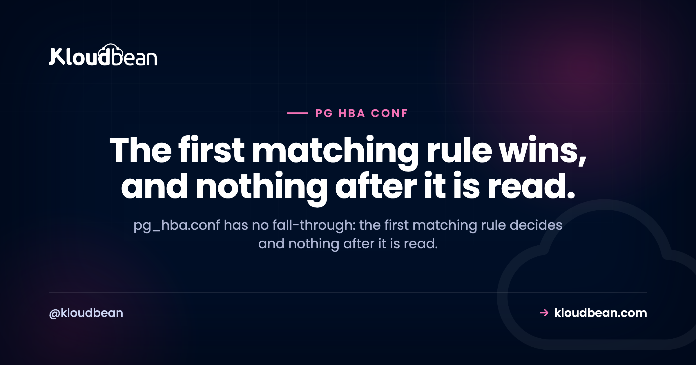

pg_hba.conf Explained: Why Your Rule Never Runs

Almost every confusing hour spent on pg_hba.conf comes from one assumption that isn't true. People treat it like a firewall rule set, where you add a permissive line and it takes effect. It doesn't work that way. PostgreSQL reads the file top to bottom, stops at the first rule that matches your connection, and commits to it. If authentication fails there, your other rules are never consulted. Understand that and the file stops being mysterious.
It's PostgreSQL's host-based authentication file, controlling who may connect from where and how they prove it. Per the documentation there is no fall-through: the first record matching the connection type, client address, database and user is used, and if authentication fails there, later records are not considered. So a permissive rule appended at the bottom does nothing if a stricter rule above it matched first. Order is the algorithm, not a style choice. If you're on managed PostgreSQL you can't edit this file at all, which is covered further down.
There is no fall-through, and that is the whole thing
PostgreSQL's own client authentication documentation is unusually blunt about this. The first record with a matching connection type, client address, requested database and user name is used to perform authentication. There is no fall-through or backup. If one record is chosen and authentication fails, subsequent records are not considered. If no record matches, access is denied.
Read that as three separate rules, because each one causes a different bug:
- First match decides. Not best match, not most specific match. First, reading downward.
- A failed match is final. PostgreSQL will not try your next rule as a second chance.
- No match at all means denied. Silence is a rejection, not a default allow.
The classic failure follows directly. Someone can't connect, so they append a generous line at the end of the file, reload, and nothing changes. A narrower rule further up already matched their connection and refused it. The new line is real, valid, and unreachable.
Two error messages, two completely different problems
This distinction falls straight out of the no-fall-through rule, and getting it wrong is how people end up editing a file that was already correct.
| What Postgres says | What actually happened | What to change |
|---|---|---|
no pg_hba.conf entry for host ... | No rule matched. Nothing in the file covers this combination. | Add or widen a rule, then reload |
password authentication failed for user ... | A rule matched. Authentication ran inside it and failed. | The credential or the method. The file is fine |
The first message is also more informative than it looks, because it echoes back exactly what it tried to match: the host, the user, the database, and whether encryption was in play. Compare each of those four against your rules and the gap is usually obvious in seconds.
One specific tail is worth naming: if the message ends with no encryption, the connection arrived unencrypted and your matching rule required SSL. That's a client-side fix rather than a file edit, and connecting Sequelize to a managed database covers that exact case with the driver options that resolve it.
The anatomy of a record
One record per line, fields separated by spaces or tabs, # starts a comment, and a trailing backslash continues a line. The shapes worth knowing:
local database user auth-method [options]
host database user address auth-method [options]
hostssl database user address auth-method [options]
hostnossl database user address auth-method [options]The connection type in the first column matters more than people expect:
| Type | Matches |
|---|---|
local | Unix-domain socket connections. Without a record of this type, socket connections are disallowed entirely |
host | TCP/IP, both SSL and non-SSL attempts |
hostssl | TCP/IP only when SSL is used |
hostnossl | The opposite: only connections not using SSL |
A trap on hostssl: the server must be built with SSL support and have the ssl parameter enabled. If not, the record is ignored except for logging a warning that it cannot match anything. So a hostssl line can sit in your file looking authoritative while doing nothing at all. If encryption is genuinely required, check that the parameter is on rather than trusting the line.
Newer PostgreSQL also supports include, include_if_exists and include_dir directives, which is worth knowing before you conclude a rule doesn't exist. With include_dir, files not starting with a dot and ending in .conf are pulled in, processed in file name order under C locale rules, so numbers sort before letters and uppercase before lowercase. If a rule is appearing from nowhere, look for an include.
Auth methods, and the two you should think twice about
scram-sha-256 is the modern password method and the right default for anything new. md5 is the legacy one, still widely present in older files, and worth migrating away from rather than copying forward into new work.
Two deserve deliberate thought:
trust means no authentication whatsoever. Any client matching that record connects as any requested user with no password. It exists for bootstrapping and local development, and it turns up in production files far more often than anyone would like, usually because someone used it to get unblocked and never came back. If you inherit a file, grep for it first.
reject is useful precisely because of the no-fall-through rule. An explicit reject placed above your permissive rules is how you carve out an exception, and it's also the line most likely to be silently eating the connection you're trying to fix.
Editing the file is only half the job for remote access
Here's the pairing that wastes whole afternoons. You add a correct host rule for a remote address, reload, and the connection still fails, so you assume the rule is wrong.
It probably isn't. The documentation notes that remote TCP/IP connections are not possible unless the server is started with an appropriate listen_addresses, because the default is to listen for TCP/IP connections only on the local loopback address. A perfect pg_hba rule cannot help if nothing is listening on an interface the client can reach.
SHOW listen_addresses; -- 'localhost' means remote clients cannot arrive at all
SHOW hba_file; -- the file actually in use, wherever it livesThat second query is worth running before any edit. The file traditionally sits in the data directory, but it can be relocated, and editing the wrong copy is a genuinely common way to lose an hour. Note that listen_addresses requires a restart, unlike pg_hba.conf itself.
Test the change before you reload it
PostgreSQL ships a view for exactly this and hardly anyone uses it. pg_hba_file_rules is documented as helpful for pre-testing changes and for diagnosing why loading the file didn't have the desired effect, and rows with a non-null error field point straight at the broken lines.
-- Any parse errors before you commit to a reload?
SELECT line_number, type, database, user_name, address, auth_method, error
FROM pg_hba_file_rules
WHERE error IS NOT NULL;Then reload. A restart is not required, because the file is re-read on SIGHUP:
SELECT pg_reload_conf(); -- from a session
pg_ctl reload -D /path/to/data -- or from the shellOne genuinely obscure detail: that reload requirement doesn't apply on Windows, where changes to pg_hba.conf are applied immediately to subsequent new connections. Worth knowing if you're troubleshooting across platforms and the behaviour seems inconsistent.
On managed PostgreSQL you cannot edit this file
Worth stating plainly, because a good share of people searching for pg_hba.conf are looking for a file they'll never be given. On a managed database the provider owns client authentication, and that's the arrangement rather than a limitation being worked around. What you get instead is the outcome the file was being used to reach.
On Kloudbean, managed PostgreSQL is locked down with IP access control rather than left open on the public internet, so the address-range question that pg_hba.conf answers is handled for you instead of in a text file. Access is controlled through IP access rules with allow and deny entries, encryption is enforced rather than negotiated per-rule, and subusers with granular permissions cover the per-user part. Backups are automatic. Seven cloud providers, one dashboard, and free migration assistance if you're bringing an existing database across.
The honest boundary: managed means the platform owns the server, the engine configuration, patching, and backups. Your schema, your queries, and your application's connection handling stay yours. If you're weighing self-managed against managed specifically because of control over files like this one, managed PostgreSQL hosting lays out what each side actually owns.
Related reading
For the ORM-side version of the SSL error, connecting Sequelize to a managed database and SQLAlchemy, plus Drizzle with Postgres. Once connections work, the next thing that bites is how many of them you open, covered in database connection pooling. On making the database quick rather than merely reachable, PostgreSQL performance tuning. For the network isolation concept, and the private networking that Enterprise plans add, what a VPC is. And if you're still choosing an engine, MySQL versus PostgreSQL.
Skip the file. Keep the database off the public internet.
Managed PostgreSQL locked down with IP access rules, enforced encryption, subusers with granular permissions, and automatic backups, across seven cloud providers in one dashboard. Free migration assistance included. Start at kloudbean.com or see pricing.
IP access control · Automatic backups · Subuser permissions · One dashboard
FAQ
What is pg_hba.conf?
It is PostgreSQL's client authentication configuration file, where HBA stands for host-based authentication. Each record specifies a connection type, a client address range where relevant, a database, a user, and the authentication method to use for connections matching those parameters. It traditionally lives in the cluster's data directory, though it can be relocated.
Why is my new pg_hba.conf rule being ignored?
Almost certainly because an earlier rule matched first. The documentation states there is no fall-through or backup: the first record matching the connection type, address, database and user is used, and if authentication fails there, subsequent records are not considered. A permissive rule appended at the bottom is unreachable if anything above it already matched, so move it above the rule that is catching the connection.
Where is pg_hba.conf located?
Traditionally in the database cluster's data directory, but it can be placed elsewhere via the hba_file configuration parameter. Rather than guessing, run SHOW hba_file; against the running server to get the path of the file actually in use. Editing a different copy is a common way to lose an hour.
What is the difference between no pg_hba.conf entry and password authentication failed?
They are different problems. No entry for host means nothing in the file matched that connection, so you need to add or widen a rule. Password authentication failed means a rule did match and authentication then failed inside it, so the rules are fine and the credential or the method is what needs attention.
Do I need to restart PostgreSQL after editing pg_hba.conf?
No. The file is read at start-up and again whenever the main server process receives a SIGHUP, so a reload is enough: call pg_reload_conf() from a session, or use pg_ctl reload. Note that on Microsoft Windows changes are applied immediately to subsequent new connections without any signal.
How do I check pg_hba.conf for errors before reloading?
Query the pg_hba_file_rules view, which the documentation describes as useful for pre-testing changes and for diagnosing why loading the file did not have the desired effect. Rows with a non-null error field indicate problems on the corresponding lines, so selecting only those gives you a short list of what to fix.
Why does my remote connection still fail after adding a host rule?
Because pg_hba.conf is only half of it. Remote TCP/IP connections are not possible unless listen_addresses is set appropriately, since the default is to listen only on the local loopback address. Check SHOW listen_addresses; and remember that changing it requires a restart, unlike pg_hba.conf which only needs a reload.
Can I edit pg_hba.conf on a managed database?
Generally no, because the provider owns client authentication on a managed engine. That is the arrangement rather than a gap to work around: instead of address rules in a text file, you get IP access control with allow and deny rules so the database is reachable only from addresses you permit, enforced encryption, and per-user permissions through subusers.